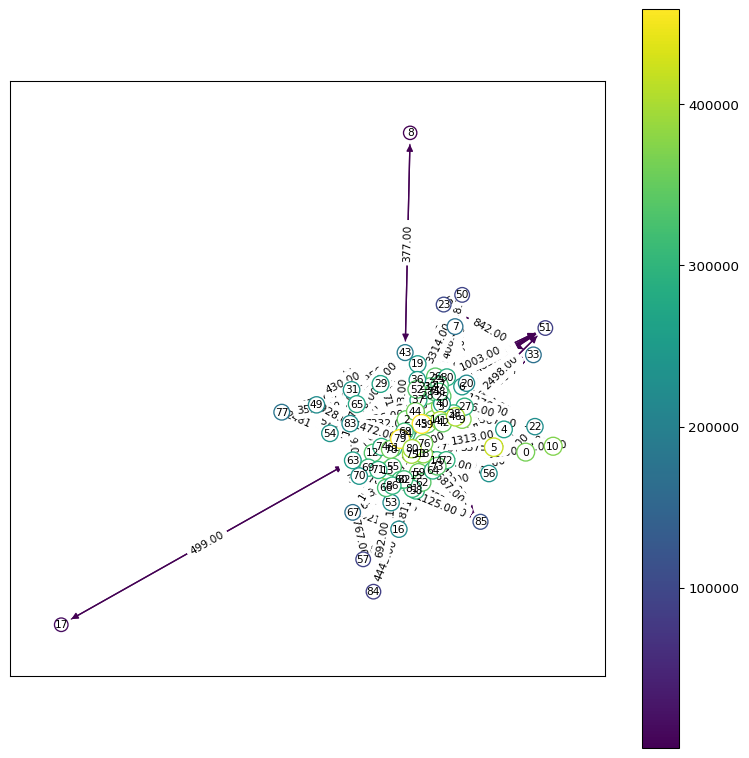
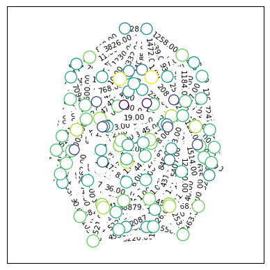
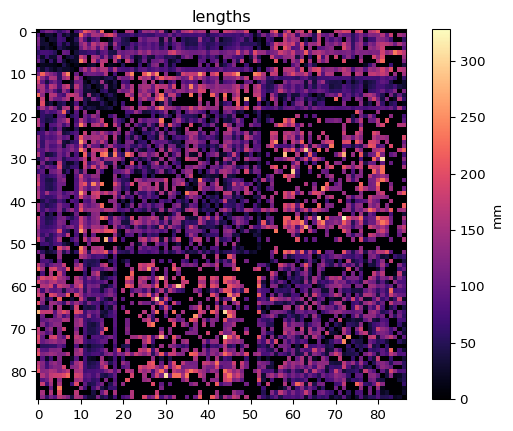
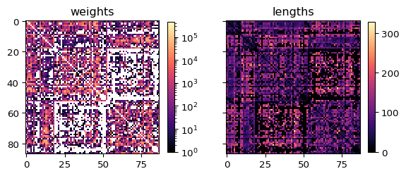
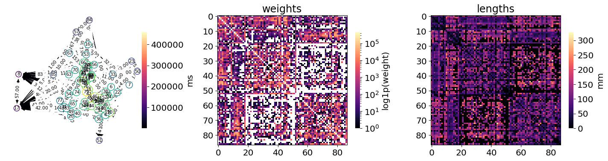
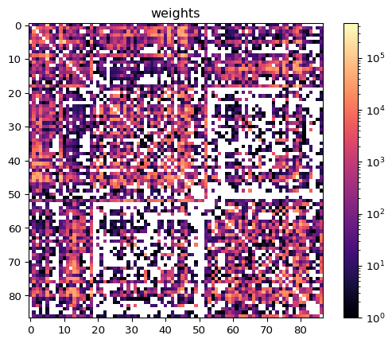

from tvbo import Connectome
# Load atlas-based connectome
sc = Connectome(parcellation={"atlas": {"name": "DesikanKilliany"}})
sc.plot_matrix()
# Custom connectome from arrays
import numpy as np
sc = Connectome(weights=np.random.rand(10, 10), number_of_regions=10)
delays = sc.calculate_delays(conduction_speed=3.0)connectomes
data.tvbo_data.connectomes
Classes
| Name | Description |
|---|---|
| Connectome | Structural connectivity data with weights, lengths, and visualization tools. |
Connectome
data.tvbo_data.connectomes.Connectome(**kwargs)Structural connectivity data with weights, lengths, and visualization tools.
Represents brain structural connectivity including connection weights, tract lengths, and spatial information. Supports loading normative connectomes from atlases or custom data, with JAX pytree compatibility.
Examples
See Also
weights_matrix : Access connection weights as array lengths_matrix : Access tract lengths as array plot_graph : Visualize as network graph plot_overview : Complete visualization with matrices and graph
Attributes
| Name | Description |
|---|---|
| atlas | Brain atlas associated with this connectome. |
| labels | Brain region labels from atlas. |
| lengths_matrix | Tract length matrix as numpy/JAX array. |
| weights_matrix | Connection weights matrix as numpy/JAX array. |
Methods
| Name | Description |
|---|---|
| calculate_delays | Calculate signal propagation delays between regions. |
| compute_delays | Calculate signal propagation delays between regions. |
| create_graph | Create NetworkX graph from connectivity matrices. |
| execute | Convert connectome to simulator-specific format. |
| from_datamodel | Create a Connectome from a datamodel instance. |
| get_atlas | Retrieve the Atlas object for this connectome. |
| get_centers | Get 3D spatial coordinates of brain region centers. |
| normalize | Add min-max normalization of connection weights to metadata. |
| normalize_weights | Set normalization equation for connection weights. |
| plot_graph | Visualize connectome as network graph. |
| plot_lengths | Plot tract lengths matrix as heatmap. |
| plot_matrix | Plot both weights and lengths matrices side by side. |
| plot_overview | Create comprehensive visualization with graph and matrices. |
| plot_weights | Plot connection weights matrix as heatmap. |
| to_yaml | Serialize Connectome to YAML format. |
| tree_flatten | Return children and auxiliary data for JAX pytree support. |
calculate_delays
data.tvbo_data.connectomes.Connectome.calculate_delays(conduction_speed=None)Calculate signal propagation delays between regions.
Parameters
conduction_speed : float, optional Conduction speed in mm/ms. If None, uses self.conduction_speed.value
Returns
np.ndarray or jax.Array Delay matrix (N x N) in milliseconds
Raises
ValueError If lengths matrix is not available
Examples
import matplotlib.pyplot as plt
sc = Connectome(parcellation={"atlas": {"name": "DesikanKilliany"}})
delays = sc.calculate_delays(conduction_speed=3.0)
plt.imshow(delays, cmap='viridis')
plt.colorbar(label='Delay (ms)')
See Also
compute_delays : Alternative method with string “default” option
compute_delays
data.tvbo_data.connectomes.Connectome.compute_delays(conduction_speed='default')Calculate signal propagation delays between regions.
Parameters
conduction_speed : str or float, default=“default” Signal propagation speed in mm/ms. If “default”, uses self.conduction_speed.value (typically 3.0 mm/ms)
Returns
np.ndarray or jax.Array Delay matrix (N x N) in milliseconds
Raises
ValueError If lengths matrix is not available
Examples
sc = Connectome(parcellation={"atlas": {"name": "DesikanKilliany"}})
delays = sc.compute_delays(conduction_speed=4.0)
print(f"Mean delay: {delays.mean():.2f} ms")Mean delay: 18.67 mscreate_graph
data.tvbo_data.connectomes.Connectome.create_graph(weight_threshold=0)Create NetworkX graph from connectivity matrices.
Parameters
weight_threshold : float, default=0 Minimum weight for including an edge in the graph
Returns
networkx.MultiDiGraph Directed multigraph with ‘weight’ and ‘delay’ edge attributes
Examples
sc = Connectome(parcellation={"atlas": {"name": "DesikanKilliany"}})
G = sc.create_graph(weight_threshold=0.1)
print(f"Nodes: {G.number_of_nodes()}, Edges: {G.number_of_edges()}")Nodes: 87, Edges: 5242execute
data.tvbo_data.connectomes.Connectome.execute(format='tvb')Convert connectome to simulator-specific format.
Parameters
format : str, default=“tvb” Target format. Currently supports “tvb” (The Virtual Brain)
Returns
Any Connectivity object in the specified format
Examples
sc = Connectome(parcellation={"atlas": {"name": "DesikanKilliany"}})
tvb_conn = sc.execute(format="tvb")
# Use with TVB simulatorfrom_datamodel
data.tvbo_data.connectomes.Connectome.from_datamodel(datamodel)Create a Connectome from a datamodel instance.
Parameters
datamodel : tvbo_datamodel.Connectome Source datamodel Connectome instance
Returns
Connectome New Connectome with fields copied from datamodel
Examples
from tvbo.datamodel import tvbo_datamodel
dm = tvbo_datamodel.Connectome(number_of_nodes=10)
sc = Connectome.from_datamodel(dm)get_atlas
data.tvbo_data.connectomes.Connectome.get_atlas()Retrieve the Atlas object for this connectome.
Returns
Atlas Atlas instance with parcellation metadata and terminology
Examples
sc = Connectome(parcellation={"atlas": {"name": "DesikanKilliany"}})
atlas = sc.get_atlas()get_centers
data.tvbo_data.connectomes.Connectome.get_centers()Get 3D spatial coordinates of brain region centers.
Returns
dict of int to tuple of float Mapping from region index to (x, y, z) coordinates in mm
Examples
sc = Connectome(parcellation={"atlas": {"name": "DesikanKilliany"}})
centers = sc.get_centers()
for idx, (x, y, z) in centers.items():
print(f"Region {idx}: ({x:.1f}, {y:.1f}, {z:.1f})")Region 0: (-24.4, -61.9, -36.6)
Region 1: (-11.5, -18.5, 7.1)
Region 2: (-12.7, 10.4, 9.8)
Region 3: (-26.0, 1.4, 0.2)
Region 4: (-20.5, -4.5, -0.8)
Region 5: (-6.1, -30.4, -33.2)
Region 6: (-25.2, -21.8, -13.6)
Region 7: (-22.9, -4.5, -19.3)
Region 8: (-8.3, 11.5, -7.8)
Region 9: (-10.2, -14.8, -10.1)
Region 10: (24.8, -61.5, -36.7)
Region 11: (11.6, -16.9, 7.1)
Region 12: (13.3, 11.8, 9.7)
Region 13: (26.6, 3.2, -0.4)
Region 14: (21.3, -2.8, -0.9)
Region 15: (26.5, -20.7, -13.8)
Region 16: (23.3, -3.0, -19.6)
Region 17: (8.5, 12.6, -7.2)
Region 18: (10.6, -14.2, -10.2)
Region 19: (-53.4, -45.8, 8.5)
Region 20: (-5.0, 21.2, 27.0)
Region 21: (-36.7, 11.2, 49.3)
Region 22: (-6.8, -78.3, 21.7)
Region 23: (-24.2, -4.8, -32.8)
Region 24: (-34.9, -44.1, -20.6)
Region 25: (-40.6, -70.6, 33.0)
Region 26: (-50.6, -31.5, -24.9)
Region 27: (-6.5, -45.4, 19.8)
Region 28: (-31.0, -88.6, 1.7)
Region 29: (-24.4, 32.0, -18.0)
Region 30: (-14.2, -67.4, -4.7)
Region 31: (-5.9, 34.5, -17.1)
Region 32: (-58.0, -21.8, -14.9)
Region 33: (-23.9, -30.4, -18.6)
Region 34: (-6.4, -28.4, 58.8)
Region 35: (-47.7, 15.5, 14.4)
Region 36: (-43.2, 41.4, -13.0)
Region 37: (-47.2, 31.7, 3.1)
Region 38: (-12.1, -80.1, 6.5)
Region 39: (-46.6, -22.3, 44.2)
Region 40: (-5.4, -18.1, 39.0)
Region 41: (-43.1, -7.0, 42.5)
Region 42: (-8.5, -59.0, 39.0)
Region 43: (-4.6, 36.3, -0.8)
Region 44: (-33.5, 46.4, 17.8)
Region 45: (-11.3, 30.5, 44.0)
Region 46: (-23.5, -64.1, 52.0)
Region 47: (-53.7, -11.5, -3.7)
Region 48: (-55.0, -39.4, 35.1)
Region 49: (-7.6, 67.5, -10.2)
Region 50: (-28.5, 13.7, -37.0)
Region 51: (-44.8, -21.6, 9.4)
Region 52: (-36.0, 0.9, -0.4)
Region 53: (54.4, -40.3, 9.9)
Region 54: (5.1, 22.5, 27.4)
Region 55: (36.8, 14.0, 49.4)
Region 56: (8.3, -78.3, 22.8)
Region 57: (23.8, -4.8, -33.7)
Region 58: (34.0, -37.7, -22.9)
Region 59: (46.3, -63.1, 32.7)
Region 60: (50.5, -27.1, -27.2)
Region 61: (7.7, -43.7, 20.1)
Region 62: (35.1, -83.9, 0.8)
Region 63: (23.6, 32.2, -18.3)
Region 64: (14.5, -65.5, -3.5)
Region 65: (-1.0, 27.0, -17.0)
Region 66: (58.0, -19.8, -15.7)
Region 67: (25.1, -29.0, -18.9)
Region 68: (7.2, -26.1, 58.7)
Region 69: (48.5, 16.1, 13.3)
Region 70: (43.1, 42.5, -13.4)
Region 71: (49.1, 32.4, 4.8)
Region 72: (13.3, -78.1, 8.1)
Region 73: (47.4, -18.8, 43.8)
Region 74: (5.8, -16.5, 39.2)
Region 75: (44.3, -4.5, 42.8)
Region 76: (10.3, -57.7, 38.7)
Region 77: (5.0, 37.2, 1.9)
Region 78: (34.5, 47.9, 16.5)
Region 79: (11.9, 31.7, 43.5)
Region 80: (25.2, -63.0, 53.3)
Region 81: (54.7, -6.9, -5.2)
Region 82: (55.9, -31.0, 36.0)
Region 83: (8.4, 67.2, -13.2)
Region 84: (28.3, 15.1, -35.1)
Region 85: (45.7, -17.9, 8.7)
Region 86: (34.9, 3.4, -2.5)normalize
data.tvbo_data.connectomes.Connectome.normalize()Add min-max normalization of connection weights to metadata.
Sets normalization equation to scale weights to [0, 1] range. Equivalent to normalize_weights("(W - W_min) / (W_max - W_min)").
Examples
sc = Connectome(parcellation={"atlas": {"name": "DesikanKilliany"}})
sc.normalize()
normalized_weights = sc.weights_matrix # Now in [0, 1] rangeSee Also
normalize_weights : Set custom normalization equation
normalize_weights
data.tvbo_data.connectomes.Connectome.normalize_weights(
equation_rhs='(W - W_min) / (W_max - W_min)',
)Set normalization equation for connection weights.
Parameters
equation_rhs : str, default=“(W - W_min) / (W_max - W_min)” Right-hand side of normalization equation. Can reference W, W_min, W_max
Examples
sc = Connectome(parcellation={"atlas": {"name": "DesikanKilliany"}})
sc.normalize_weights("W / W_max") # Normalize to [0, 1]
normalized = sc.weights_matrix # Returns normalized weightsNotes
The normalization is applied when accessing weights_matrix property.
plot_graph
data.tvbo_data.connectomes.Connectome.plot_graph(
ax=None,
node_cmap='viridis',
edge_cmap='viridis',
node_colors='in-strength',
node_size='in-strength',
threshold_percentile=0,
pos_scaling=1,
node_labels=True,
edge_labels=True,
log_in_strength=True,
node_size_scaling=100,
edge_color='weight',
pos='spring',
plot_brain=None,
edge_kwargs=None,
node_kwargs=None,
fontsize=8,
)Visualize connectome as network graph.
Parameters
ax : matplotlib.axes.Axes, optional Axes to plot on. If None, creates new figure node_cmap : str or Colormap, default=“viridis” Colormap for node colors edge_cmap : str or Colormap, default=“viridis” Colormap for edge colors node_colors : str, default=“in-strength” Node coloring scheme: “in-strength” or “node” node_size : str or float, default=“in-strength” Node size scheme: “in-strength” or numeric value threshold_percentile : float, default=0 Only show edges above this percentile of weights pos_scaling : float, default=1 Scaling factor for spring layout positions node_labels : bool, default=True Whether to show node index labels edge_labels : bool, default=True Whether to show edge weight labels log_in_strength : bool, default=True Use log scale for in-strength calculations node_size_scaling : float, default=100 Scaling factor for node sizes edge_color : str, default=“weight” Edge attribute to use for coloring pos : str or dict, default=“spring” Node positions: “spring” for automatic layout or dict of positions plot_brain : str, optional Brain view for anatomical layout: “horizontal”, “sagittal”, or “coronal” edge_kwargs : dict, optional Additional arguments passed to nx.draw_networkx_edges node_kwargs : dict, optional Additional arguments passed to nx.draw_networkx_nodes fontsize : float, default=8 Font size for labels
Returns
Figure or ScalarMappable Figure if ax is None, otherwise ScalarMappable for colorbar
Examples
import matplotlib.pyplot as plt
sc = Connectome(parcellation={"atlas": {"name": "DesikanKilliany"}})
# Simple graph
fig, ax = plt.subplots(figsize=(10, 10))
mappable = sc.plot_graph(ax, threshold_percentile=75)
plt.colorbar(mappable, ax=ax)
# Anatomical layout
fig, ax = plt.subplots()
sc.plot_graph(ax, plot_brain="horizontal", node_labels=False)

plot_lengths
data.tvbo_data.connectomes.Connectome.plot_lengths(ax, cmap='magma')Plot tract lengths matrix as heatmap.
Parameters
ax : matplotlib.axes.Axes Axes to plot on cmap : str, default=“magma” Matplotlib colormap name
Returns
matplotlib.image.AxesImage Image object for adding colorbar
Examples
import matplotlib.pyplot as plt
sc = Connectome(parcellation={"atlas": {"name": "DesikanKilliany"}})
fig, ax = plt.subplots()
im = sc.plot_lengths(ax)
plt.colorbar(im, ax=ax, label="mm")
plot_matrix
data.tvbo_data.connectomes.Connectome.plot_matrix(
log_weights=False,
cmap='magma',
)Plot both weights and lengths matrices side by side.
Parameters
log_weights : bool, default=False If True, use log scale for weights colormap cmap : str, default=“magma” Matplotlib colormap name
Returns
matplotlib.figure.Figure Figure containing both matrix plots
Examples
sc = Connectome(parcellation={"atlas": {"name": "DesikanKilliany"}})
sc.plot_matrix(log_weights=True)
plot_overview
data.tvbo_data.connectomes.Connectome.plot_overview(
weights_kwargs=None,
lengths_kwargs=None,
graph_kwargs=None,
log_weights=False,
)Create comprehensive visualization with graph and matrices.
Produces a three-panel figure showing network graph, weights matrix, and lengths matrix with synchronized colorbars and formatting.
Parameters
weights_kwargs : dict, optional Keyword arguments passed to plot_weights lengths_kwargs : dict, optional Keyword arguments passed to plot_lengths graph_kwargs : dict, optional Keyword arguments passed to plot_graph log_weights : bool, default=False Use logarithmic scale for weights
Returns
matplotlib.figure.Figure Figure with three subplots (graph, weights, lengths)
Examples
sc = Connectome(parcellation={"atlas": {"name": "DesikanKilliany"}})
sc.plot_overview(
log_weights=True)
See Also
plot_graph : Network graph visualization plot_matrix : Side-by-side matrix visualization
plot_weights
data.tvbo_data.connectomes.Connectome.plot_weights(ax, cmap='magma', log=False)Plot connection weights matrix as heatmap.
Parameters
ax : matplotlib.axes.Axes Axes to plot on cmap : str, default=“magma” Matplotlib colormap name log : bool, default=False If True, use logarithmic color scale
Returns
matplotlib.image.AxesImage Image object for adding colorbar
Examples
import matplotlib.pyplot as plt
sc = Connectome(parcellation={"atlas": {"name": "DesikanKilliany"}})
fig, ax = plt.subplots()
im = sc.plot_weights(ax, log=True)
plt.colorbar(im, ax=ax)
to_yaml
data.tvbo_data.connectomes.Connectome.to_yaml(filepath=None)Serialize Connectome to YAML format.
Parameters
filepath : str, optional Path to save YAML file. If None, returns YAML string.
Returns
str YAML representation of the Connectome
Examples
sc = Connectome(parcellation={"atlas": {"name": "DesikanKilliany"}})
yaml_str = sc.to_yaml()
sc.to_yaml("connectome.yaml") # Save to file'connectome.yaml'tree_flatten
data.tvbo_data.connectomes.Connectome.tree_flatten()Return children and auxiliary data for JAX pytree support.
Children: (weights, lengths) so JAX can map/transform numerical payloads. Aux data: metadata dict WITHOUT the array data to avoid duplication.
Functions
| Name | Description |
|---|---|
| get_normative_connectome_data | Load normative connectivity matrices from BIDS dataset. |
get_normative_connectome_data
data.tvbo_data.connectomes.get_normative_connectome_data(atlas, desc)Load normative connectivity matrices from BIDS dataset.
Parameters
atlas : str Name of the brain parcellation atlas (e.g., “DesikanKilliany”, “Destrieux”) desc : str Description/type of the connectome data (e.g., “dTOR”, “dMRT”)
Returns
weights : tvbo_datamodel.Matrix Connection strength matrix lengths : tvbo_datamodel.Matrix Tract length matrix
Examples
weights, lengths = get_normative_connectome_data("DesikanKilliany", "dTOR")